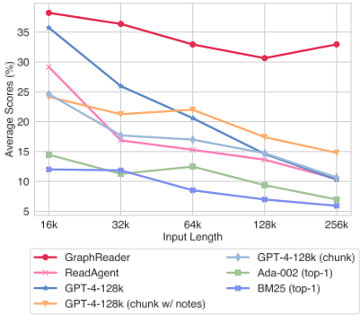
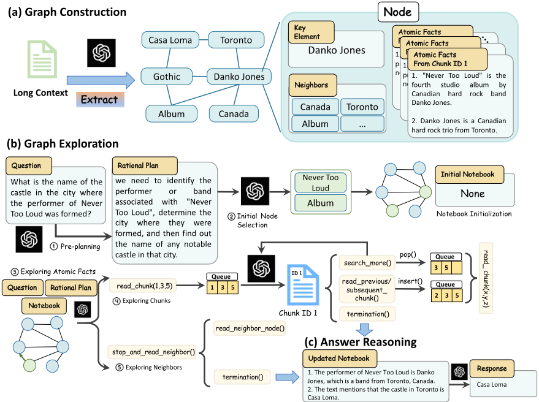
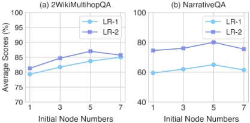
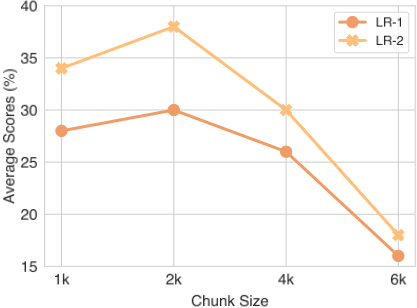
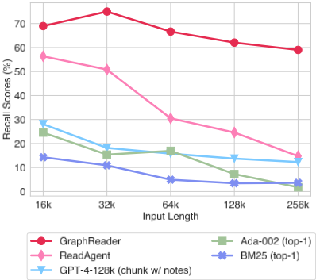
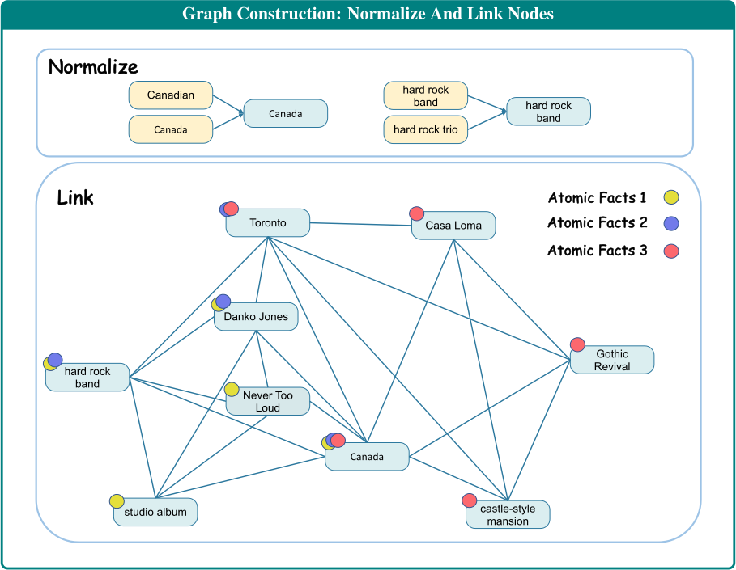
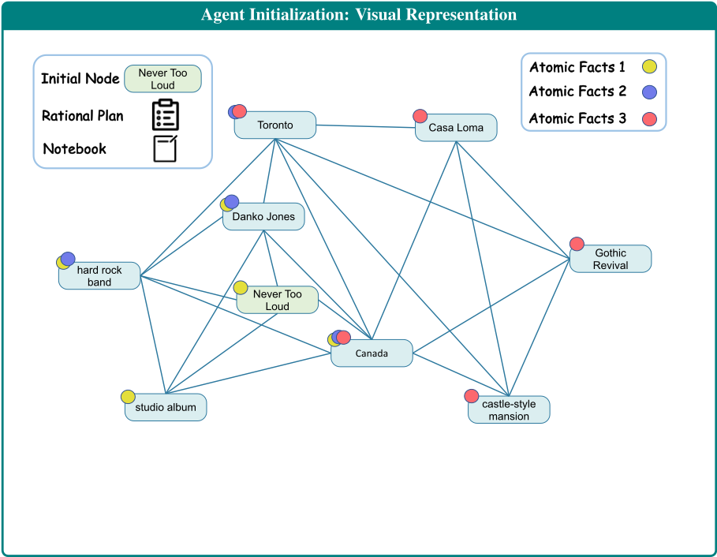
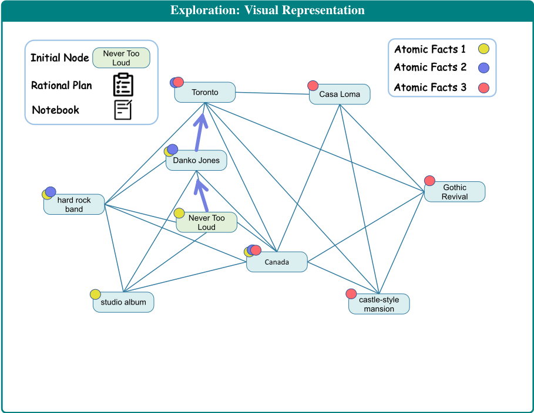

GraphReader：构建基于图的 Agent 以增强大语言模型的长上下文能力
论文针对 LLM 处理长文本时受上下文窗口限制、且易受 'lost in the middle' 影响的问题，提出 GraphReader：先将长文切分为 chunk 并压缩为 atomic facts 与 key elements 构建成图，再由 Agent 基于预定义函数在图上自主探索，配合 rational plan、notebook 记忆与反思，以 4k 窗口完成 16k-256k 长文问答。在 LV-Eval 与多个多跳 QA 基准上，GraphReader 以 4k 窗口大幅超越 GPT-4-128k，token 消耗仅比 ReadAgent 高 8% 而性能提升超一倍。对团队而言，这是'用 Agent + 结构化上下文替代长窗口/RAG'的代表性方案，其建图管线、函数调用 harness 与 notebook 记忆机制可直接借鉴到知识库问答与长文档处理流程中。
LLM 处理长文本时受上下文窗口与显存限制：模型级方法（位置编码微调、注意力变体）需要全长文本训练、成本高，且存在 'lost in the middle' 问题；现有 Agent 级方法将文档组织成树（MemWalker、PEARL）或分页 gist memory（ReadAgent），难以捕捉多跳问题与长程依赖，在超长上下文上性能受限。
三阶段架构：1) 图构建——将长文按段落结构切成最大 2k token 的 chunk，用 LLM 将每个 chunk 压缩为 atomic facts 并抽取 key elements（关键名词、动词、形容词），归一化后作为节点，若某节点的 key element 出现在另一节点的 atomic facts 中则建边；2) 图探索——Agent 先逐步分解问题制定 rational plan 并选择 N 个初始节点，随后按 coarse-to-fine 策略先读节点全部 atomic facts、再读选中的原文 chunk、最后探索邻居节点，通过 read_chunk、stop_and_read_neighbor、search_more、read_previous_chunk、read_subsequent_chunk、read_neighbor_node、termination 等预定义函数调用推进，并用 notebook 持续记录 supporting facts；3) 答案推理——汇总各探索路径的笔记，采用 Chain-of-Thought 分析并用多数投票消解不一致，生成最终答案。
在 LV-Eval 的 HotpotWikiQA-mixup 上，GraphReader 以 4k 上下文窗口在 16k 至 256k 各长度级别上均大幅超越 GPT-4-128k：16k 长度下 LR-1 相对提升 10.53%，128k 下相对提升 75.00%
在 HotpotQA、2WikiMultihopQA、MuSiQue、NarrativeQA 四个长上下文 QA 基准上全面优于 RAG（BM25/Ada-002）、GraphRAG、LongRAG、ReadAgent、PEARL 等基线，且性能接近直接提供 Golden supporting facts 的设置
成本分析：GraphReader 每 question 平均消耗 52.8k token，仅比 ReadAgent（48.7k）多 1.08 倍，但性能提升超过一倍；单文档多查询场景只需构建一次图，可摊薄整体 token 消耗
消融实验：随机选择初始节点和邻居节点导致平均 18% 的性能下降；初始节点数最优为 5（超过后因噪声增加性能下降，单跳场景尤甚），chunk 大小最优为 2k
supporting facts 召回率：随上下文从 16k 增至 256k 各方法均下降，但 GraphReader 在 256k 长度下仍保持约 60% 召回率，而 ReadAgent 显著退化
在更贴近真实场景的 QuALITY 与 Natural Questions 数据集上显著优于其他基线模型
与把文档组织成树（MemWalker、PEARL）或压缩为分页 gist memory（ReadAgent）的已有 Agent 方法不同，GraphReader 用 key element + atomic facts 的图结构显式捕捉长文本中的长程依赖与多跳关系，并让 Agent 通过规划、反思、notebook 记忆与函数调用在图上做 coarse-to-fine 探索；相比同样使用图结构的 KGP（仅用 Agent 生成查询），GraphReader 充分发挥了 Agent 的规划与反思能力，而非仅做检索。
相关度级别：high
命中能力域：3.1 上下文工程与记忆 | 3.3 Agent 架构与工具使用 | 3.5 评测与可靠使用
理由：直接命中 3.1（长上下文策略、结构化上下文组织、Agent notebook 记忆机制）与 3.3（Agent loop 与 harness 设计、预定义函数调用集、规划 rational plan 与反思、单 Agent 执行可靠性），并在 Cost Analysis 部分涉及 3.5 的成本与效率优化（token 消耗对比、单文档多查询摊薄成本）。对不训练模型、专注'把模型用好'的团队，这是用上下文工程 + Agent 架构弥补窗口限制、替代朴素 RAG 的代表性范式，其建图管线、函数集与 prompt 设计（附录完整给出）均可直接迁移。
建议动作：深入精读并做内部分享
arXiv:2406.14550v2 [cs.CL] 5 Nov 2024
GraphReader：构建基于图的 Agent 以增强大语言模型的长上下文能力
Shilong Li ∗ 1 , Yancheng He ∗ 1 , Hangyu Guo ∗ 1 , Xingyuan Bu ∗†‡ 1 , Ge Bai 1 , Jie Liu 2 , 3 , Jiaheng Liu 1 , Xingwei Qu 4 , Yangguang Li 3 , Wanli Ouyang 2 , 3 , Wenbo Su 1 , Bo Zheng 1
1 阿里巴巴集团 2 香港中文大学
3 4
上海人工智能实验室 曼彻斯特大学 zhuli.lsl@taobao.com, xingyuanbu@gmail.com
长上下文能力对于大语言模型（LLMs）应对复杂的长输入任务至关重要。尽管人们已付出诸多努力来优化 LLMs 的长上下文能力，但在稳健地处理长输入方面仍存在挑战。本文提出 GraphReader，这是一种基于图的 Agent 系统，旨在通过将长文本组织成图结构，并利用一个 Agent 自主地探索该图来处理长文本。在接收到问题后，Agent 首先进行逐步分析并制定合理的计划；随后，它调用一组预定义的函数来读取节点内容及其邻居节点，从而实现对图的由粗到细的探索。在整个探索过程中，Agent 持续记录新的见解，并对当前状况进行反思以优化探索过程，直到收集到足够的信息来生成答案。在 LV-Eval 数据集上的实验结果表明，GraphReader 仅使用 4k 上下文窗口，在 16k 到 256k 的各种上下文长度上均以较大幅度持续超越 GPT-4-128k。此外，我们的方法在四个具有挑战性的单跳和多跳基准测试（benchmark）上也展现出优越的性能。
大语言模型（Large Language Models, LLMs）在自然语言理解与生成方面取得了巨大进展（Zhao et al., 2023; Liu et al., 2024a; Feng et al., 2022; Peng et al., 2020; Xv et al., 2022; Peng et al., 2023b; Bu et al., 2021）。然而，基于 transformer 的 LLMs 由于上下文窗口和内存使用的限制，在处理长上下文时仍然存在困难。
当前解决 LLMs 长上下文任务的技术可以从两个视角进行划分：1）模型级（Model-level），包括使用修改后的位置嵌入进行微调（Chen et al.,
∗ 前四位作者贡献相同。
† 通讯作者。‡ 项目负责人。

2023b; Zhu et al., 2023; Peng et al., 2023a; Ding et al., 2024），以及应用修改了注意力机制的 transformer 变体（Dai et al., 2019; Munkhdalai et al., 2024; Gu and Dao, 2023）；2）Agent 级（Agent-level），即采用检索增强的 LLM 或 Agent，利用具有有限上下文窗口的 LLM 来处理长上下文（Nakano et al., 2021; Lee et al., 2024）。
然而，模型级方法通常使用目标长度的文本来训练 LLMs，这在构建训练数据集方面带来了挑战，并导致高昂的训练成本（Zhu et al., 2023）。此外，通过这些方法优化的长上下文 LLMs 往往会忽略长上下文中的关键细节，即所谓的"lost in the middle"（迷失在中间）现象（Liu et al., 2024b），这限制了它们处理多跳（multi-hop）问题等复杂任务的能力。Agent 级方法将输入文本转换为树结构（Chen et al., 2023a）或分页页面（Lee et al., 2024），未能捕捉多跳和长程依赖关系，从而限制了它们在超长上下文上的有效性，如图 1 所示。
为了解决这些问题，我们提出了一种名为 GraphReader 的基于图的 Agent。如图 2 所示，GraphReader 首先将长文本分割为离散的文本块（chunks），提取其中的重要信息，并将其压缩为关键要素（key elements）和原子事实（atomic facts）。然后，这些关键要素和事实被用于构建一个图，图中的节点表示关键要素及其关联的原子事实。这种图结构有效地捕捉了长文本中的长程依赖和多跳关系。随后，GraphReader 在逐步理性规划的引导下，使用预定义函数自主地探索该图。基于给定的问题，Agent 逐步访问信息，从粗粒度的关键要素和原子事实到详细的原始文本块，并记录笔记、进行反思，直到收集到足够的信息来生成答案。总之，我们的主要贡献有三个方面：
长上下文大语言模型（LLM） 近期的研究工作（Chen et al., 2023b; Ding et al., 2024; Peng et al., 2023a）聚焦于位置插值（PI）以增强长上下文能力。然而，这些方法需要在全长文本上进行训练，导致数据和训练成本显著增加（Chen et al., 2023c; Fu et al., 2024; Bai et al., 2024b）。因此，PoSE（Zhu et al., 2023）和 SkipAlign（Wu et al., 2024a）研究了数据跳读策略，但往往忽略长文本中的细节信息（Liu et al., 2024b; Bai et al., 2024a; Wu et al., 2024b）。此外，无论上下文窗口被扩展到何种程度，它仍然受限于预定义的固定长度。为解决这些局限，研究者提出了采用改进注意力机制的 Transformer 变体（Dai et al., 2019; Gu and Dao, 2023; Munkhdalai et al., 2024）。然而，这些模型容易丢失较早的信息。
检索 检索增强生成（RAG）利用庞大的文档数据库来提取与任务相关的信息，以辅助响应生成。许多研究工作考察了不同层次的检索粒度，包括词元（Khandelwal et al., 2019）、实体（Févry et al., 2020; De Jong et al., 2021）和文本块（Liu, 2024; LangChain-team, 2024）。其他方法则探索了多样的检索方式，例如 BM25（Rasooli and Tetreault, 2015）以及基于学习的策略（Khattab and Zaharia, 2020; Sachan et al., 2023; Sun et al., 2021）。尽管具备上述能力，由于难以构建稳健的决策机制，RAG 在应对复杂问题时仍面临挑战。相比之下，我们采用借助规划与反思来收集关键信息的 Agent，从而有效解决复杂问题。
用于检索的 Agent 近期研究越来越多地将 LLM 用作 Agent 来解决复杂问题，利用其强大的规划与反思能力（Yao et al., 2022; Park et al., 2023）。这些能力已被应用于函数调用（Li et al., 2023）和知识图谱问答（KGQA）（Sun et al., 2023; Luo et al., 2023）等复杂任务。Agent 还能够检索非结构化信息。例如，WebGPT（Nakano et al., 2021）模拟人类行为在互联网上搜索特定答案。此外，MemWalker（Chen et al., 2023a）和 PEARL（Sarthi et al., 2024）将文档组织为树状结构，而 ReadAgent（Lee et al., 2024）则将文档压缩为要点记忆目录（gist memory directory）。然而，这些方法在处理多跳问题时往往表现不佳。KGP（Wang et al., 2024）将文档组织成图，但它主要利用 Agent 来生成查询，因而未能充分发挥 Agent 在规划与反思方面的能力。
GraphReader 构建在图 G = {V, E} 之上，其中每个节点 v_i ∈ V 包含一个关键元素 k_i 和一组摘要内容，即原子事实 A_i。换言之，v_i = {k_i, A_i}。每条边 e_ij ∈ E 表示节点 v_i 与 v_j 之间的关系。这种图结构使 GraphReader 能够在有限的上下文窗口内从输入文档 D 中捕获全局信息，从而决定是深入探索当前节点还是跳转到相邻节点。在图探索过程中，GraphReader 会收集支持性事实，并在收集到足以回答问题的信息后终止探索。如图 2 所示，GraphReader 的整个过程由以下三个阶段组成：图构建、图探索和答案推理。这三个阶段所使用的提示词详见附录 A，我们流程的详细示例可参见附录 I。

为了在大语言模型（LLM）的上下文限制内从文档 D 中提取节点，我们首先在保留段落结构的前提下，将 D 切分为最大长度为 L 的文本块（chunk）。对于每个文本块，我们提示 LLM 将其总结为原子事实（atomic facts），即简化原文的最小不可分割事实。我们还提示 LLM 从每个原子事实中提取关键元素（key elements），例如关键的名词、动词和形容词。在处理完所有文本块后，我们按照 Lu et al. (2023) 所描述的方法对关键元素进行归一化，以处理词汇噪声和粒度问题，从而得到最终的关键元素集合。随后，我们构建每个节点 v i = ( k i , A i ) ，其中 k i 是一个关键元素，A i 是与 k i 对应的原子事实集合。最后，若关键元素 k i 出现在 A j 中（反之亦然），我们便将节点 v i 和 v j 相连。
给定图 G 和问题 Q，我们的目标是设计一个能够利用预定义函数自主探索该图的 Agent。Agent 首先会维护一个笔记本（notebook）来记录支持性事实，这些事实最终将用于推导最终答案。随后，Agent 执行两项关键初始化：定义理性计划与选择初始节点。
理性计划（Rational Plan） 为了应对复杂的现实世界多跳（multi-hop）问题，预先规划解答过程至关重要。Agent 将原始问题逐步分解，识别所需的关键信息，并形成理性计划。
初始节点（Initial Node） 选择具有策略性的起点对于提升搜索效率至关重要。Agent 评估所有节点 V 的关键元素，并依据问题和理性计划选择 N 个初始节点。
在选择 N 个初始节点作为起点后，Agent 会对每个初始节点进行探索：首先探索原子事实（atomic facts），然后探索该节点的文本块（chunk）。接下来，Agent 在问题和理性计划的引导下探索邻居节点。在探索过程中，Agent 会持续将相关信息更新到笔记本（notebook）中。
探索原子事实（Exploring Atomic Facts） 将与某个节点相关的所有原始文本块都纳入上下文窗口是不切实际的。因此，Agent 采用由粗到细（coarse-to-fine）的策略，从阅读原子事实逐步推进到阅读原始文本，因为所有原子事实都能容纳于上下文窗口之内。首先，将与某个节点关联的所有原子事实按其对应的文本块进行分组，标注相应的文本块 ID，并输入给 Agent。这使 Agent 能够通过阅读所有原子事实组来把握每个文本块的概貌。与此同时，Agent 利用问题、理性计划以及笔记本中的笔记，反思所需的线索，并判断哪个文本块可能包含有用信息。随后，为 Agent 提供两个函数：1) read_chunk，如果 Agent 判定某些文本块值得进一步阅读，它会以文本块 ID 填写函数参数，即 read_chunk(List[ID])，并将这些 ID 追加到文本块队列中；2) stop_and_read_neighbor，相反，如果 Agent 认为没有任何文本块值得进一步阅读，它将结束对该节点的阅读，并转而探索邻居节点。
探索文本块（Exploring Chunks） 当文本块队列非空时，表明 Agent 已经识别出多个感兴趣的文本块。随后，我们遍历该队列，逐一阅读每个文本块。这一步至关重要，因为原子事实仅仅概括了关键信息并提供简短的线索，而具体的细节最好直接从原始文本块中获取。在阅读文本块的过程中，Agent 会再次结合问题和理性计划进行思考，考虑可以向当前笔记本中补充哪些内容。任何被发现的支持性事实（supporting facts）都将记录到笔记本中。根据更新后的笔记本，Agent 随后将从以下四个函数中选择其一：1) search_more，如果支持性事实不充分，Agent 将继续探索队列中的文本块；2) read_previous_chunk 和 3) read_subsequent_chunk，由于截断问题，相邻的文本块可能包含相关且有用的信息，Agent 可能会将这些 ID 插入队列；4) termination，如果已经收集到足够回答问题的信息，Agent 将结束探索。
探索邻居节点（Exploring Neighbors） 当当前节点的原子事实和分块队列已被完全处理后，即表明该节点已被彻底探索完毕，Agent 需要访问下一个节点。Agent 综合考虑问题、理性计划以及笔记本的内容，检查所有邻居节点（即关键元素），并执行以下两个功能之一：1) read_neighbor_node，Agent 选择一个可能有助于回答问题的邻居节点，并重新进入探索原子事实和分块的过程；2) termination，Agent 判定所有邻居节点均不包含有用信息，则结束探索。
在 N 个 Agent 独立收集信息并停止探索后，我们将汇总每个 Agent 的所有笔记，用于推理并生成最终答案。借助思维链（Chain-of-Thought, CoT）(Wei et al., 2022)，LLM 首先在考虑来自其他记忆的补充信息的前提下分析每条笔记，并采用多数投票策略来解决任何不一致之处。最终，LLM 将综合考虑所有可用信息，生成最终答案。
Evaluation Benchmarks We conduct experiments on two types of long-context QA benchmarks, including multi-hop long-context QA, i.e., HotpotQA (Yang et al., 2018), 2WikiMultihopQA (Ho et al., 2020), MuSiQue (Trivedi et al., 2022), and a single-hop long-context QA benchmark, i.e., NarrativeQA (Kociský et al., 2018) from LongBench (Bai et al., 2023). Additionally, we also incorporate HotpotWikiQA-mixup from LVEval (Yuan et al., 2024), a multi-hop benchmark that features five levels of text length: 16k, 32k, 64k, 128k, and 256k. Table 1 presents the statistics about these benchmarks, and detailed information is provided in Appendix C.
Evaluation Metrics We employ several automatic evaluation metrics, i.e., F 1 score, Exact Match (EM) score, and an optimized F 1 * score, as introduced by LV-Eval (Yuan et al., 2024). Specifically, F 1 * first computes the recall of golden answer keywords and only calculates the F 1 score if it exceeds a certain threshold. Otherwise, the score defaults to zero. Despite the cost-effectiveness of automatic metrics, their accuracy may be affected by the response format. Hence, we implement LLM Raters for answer correctness evaluation using an LLM, denoted as LLM-Rating-1 (LR-1) and LLM-Rating-1 (LR-2), following ReadAgent (Lee et al., 2024). Details on the evaluation metrics can be found in Appendix B.
Baseline Methods We compare our approach with the following baselines: retrieval augmented generation (RAG), long-context LLM, and agentbased methods. (1) RAG : We choose Okapi BM25 (Robertson and Zaragoza, 2009) or OpenAI API embedding model Ada-002 to retrieve the chunks most relevant to the question and employ GPT-4-128k ( gpt-4-1106-preview ) to read retrieved chunks and answer the question. In addition to traditional RAG methods, we also compared GraphRAG (Edge et al., 2024) and LongRAG (Jiang et al., 2024), which utilize LLM to enhance RAG ability. (2) Long-context LLM : We select GPT-4-128k for directly reading full text when the text content fits within the input window, or for segmenting the text into chunks for sequential reading. (3) Agent-based Method : We select ReadAgent (Lee et al., 2024) and PEARL (Sun et al., 2024), which employ an agent-based system for the execution of retrieval and reading processes for long-context QA. The detailed description of these methods is provided in Appendix D.
Implementation Details In our experiments, we employ GPT-4-128k for both our method and baseline approaches, setting the temperature to 0.2. For GraphReader, the input window size is configured to 4k tokens unless stated otherwise. We limit the maximum chunk size to 2k tokens, initiate searches from 5 initial nodes, and impose a function call limit of 10 for each search path.
https://platform.openai.com/docs/guides/embeddings/ embedding-models
| Task | Dataset | Avg #Tokens | Max #Tokens | #Samples |
|---|---|---|---|---|
| Multi-hop QA | HotpotQA | 9.4k | 15.9k | 300 |
| Multi-hop QA | 2WikiMultihopQA | 8.8k | 15.9k | 300 |
| Multi-hop QA | MuSiQue | 15.5k | 16.0k | 200 |
| Multi-hop QA | HotpotWikiQA-mixup | 142.4k | 370.8k | 250 |
| Single-hop QA | NarrativeQA | 29.7k | 63.7k | 200 |
| Task | Dataset | Avg #Tokens | Max #Tokens | #Samples |
Results of Agent-based Methods By comparing our approach with all baselines in Table 2, it is obvious that our approach consistently performs better than them on four long-context benchmarks and demonstrates superior performance in multihop long-context tasks. In our approach, benefiting from the graph's ability to capture the relationships between detailed information, our method can identify crucial information and search for the supporting facts for the input question efficiently. This strategy significantly boosts the agent's capability in multi-hop reasoning and capturing long-range dependencies of key information in a long context. Moreover, the results in Table 2 show that ReadAgent, with a 128k context window setup, underperforms GraphReader with a 4k context window and even performs worse than GPT-4-128k full-text reading. We attribute this to ReadAgent's strategy of excessively compressing the original texts into gist memories, and feeding all mixed memories to the model for page number selection. Compared to our GraphReader, the strategy of ReadAgent may restrict the agent's ability to identify specific details and capture intrinsic connections among key elements in a long context, consequently affecting its overall performance. This further indicates that our approach can more efficiently unlock the capabilities of constrained context window LLMs in processing long context. Additionally, we observe that the performance of our method closely matches that achieved by directly supplying supporting facts to the LLM ( i.e., Golden in Table 2). This is because our method incorporates not only pre-planning, reflection, and various actions but also the usage of a graph containing key information, facilitating the agent to search for the correct supporting facts.
https://github.com/openai/tiktoken
| Method.Method | Input Window.Input Window | HotpotQA.LR-1 | HotpotQA.LR-2 | HotpotQA.EM | 2WikiMultihopQA.F 1 | 2WikiMultihopQA.LR-1 | 2WikiMultihopQA.LR-2 | 2WikiMultihopQA.EM | 2WikiMultihopQA.F 1 | MuSiQue.LR-1 | MuSiQue.LR-2 | MuSiQue.EM | MuSiQue.F 1 | NarrativeQA.LR-1 | NarrativeQA.LR-2 | NarrativeQA.EM | NarrativeQA.F 1 |
|---|---|---|---|---|---|---|---|---|---|---|---|---|---|---|---|---|---|
| BM25 (top-1) | 4 k | 57.7 | 63 | 33.7 | 43.8 | 36 | 39 | 25 | 30.4 | 33 | 36.5 | 19 | 23.9 | 29.5 | 34.5 | 4.0 | 11.3 |
| BM25 (top-3) | 4 k | 74.7 | 78.3 | 45.7 | 58.5 | 59.7 | 62 | 42.3 | 51.9 | 43.5 | 49.5 | 25 | 31.1 | 44.5 | 52.5 | 7.0 | 20.5 |
| Ada-002 (top-1) | 4 k | 63 | 70.7 | 40 | 53.2 | 57 | 59.3 | 41 | 49.4 | 34.5 | 37 | 20 | 26.6 | 37.5 | 46.5 | 5.0 | 15.5 |
| Ada-002 (top-3) | 4 k | 72 | 77.3 | 45 | 58.1 | 65.7 | 66.7 | 44.7 | 55.3 | 40 | 45.5 | 24.5 | 32.1 | 45.5 | 53.0 | 7.5 | 19.5 |
| GPT-4-128k | 128 k | 83.3 | 88.3 | 53 | 68.4 | 77.3 | 80 | 58.7 | 70 | 52 | 59.5 | 33.5 | 42.7 | 63.5 | 77.0 | 11.5 | 29.4 |
| GPT-4-128k (chunk) | 4 k | 71.3 | 74.7 | 45.7 | 59.5 | 59.3 | 62.3 | 40.7 | 50.5 | 41 | 43 | 23 | 32.1 | 58.0 | 69.5 | 9.50 | 25.5 |
| GPT-4-128k (chunk w/ notes) | 4 k | 72.3 | 76.7 | 45.7 | 59.5 | 65.7 | 68.7 | 46.3 | 56.6 | 39.5 | 43 | 25 | 32.5 | 56.5 | 65.0 | 8.5 | 24.3 |
| ReadAgent | 128 k | 72.3 | 78.7 | 48 | 62 | 79 | 81 | 52.7 | 63.7 | 54.5 | 61 | 35 | 45.1 | 63.0 | 75.5 | 5.0 | 18.9 |
| Pearl | 128 k | 74.7 | 79 | 46.3 | 60.4 | 70 | 71 | 46 | 57.6 | 45 | 51.5 | 23 | 33.3 | 43.5 | 48.0 | 7.5 | 16.2 |
| LongRAG | 128 k | 75.7 | 78.3 | 48.7 | 63.9 | 73 | 75 | 51.3 | 63.5 | 49 | 54.5 | 31 | 40.3 | 60.5 | 69.0 | 15.0 | 27.0 |
| GraphRAG | 128 k | 73.7 | 80.3 | 49.7 | 59.7 | 67.7 | 71.3 | 42.3 | 53.9 | 46.5 | 56 | 21.5 | 31.2 | 52.0 | 66.5 | 15.0 | 23.1 |
| GraphReader | 4 k | 84.3 | 89.7 | 55 | 70 | 83.7 | 87 | 59.3 | 70.1 | 59 | 63.5 | 38 | 47.4 | 65.0 | 80.0 | 15.5 | 29.8 |
| Golden | 4 k | 92.3 | 93.7 | 57 | 73.8 | 88.3 | 89.7 | 63 | 73.4 | 66 | 69 | 45 | 56 | - | - | - | - |
| Method.Method | Input Window.Input Window | HotpotQA.LR-1 | HotpotQA.LR-2 | HotpotQA.EM | 2WikiMultihopQA.F 1 | 2WikiMultihopQA.LR-1 | 2WikiMultihopQA.LR-2 | 2WikiMultihopQA.EM | 2WikiMultihopQA.F 1 | MuSiQue.LR-1 | MuSiQue.LR-2 | MuSiQue.EM | MuSiQue.F 1 | NarrativeQA.LR-1 | NarrativeQA.LR-2 | NarrativeQA.EM | NarrativeQA.F 1 |
| Method. | Input.Window. | HotpotWikiQA-mixup.16k.LR-1 | HotpotWikiQA-mixup.16k.LR-2 | HotpotWikiQA-mixup.16k.F 1 * | HotpotWikiQA-mixup.32k.LR-1 | HotpotWikiQA-mixup.32k.LR-2 | HotpotWikiQA-mixup.32k.F 1 * | HotpotWikiQA-mixup.64k.LR-1 | HotpotWikiQA-mixup.64k.LR-2 | HotpotWikiQA-mixup.64k.F 1 * | HotpotWikiQA-mixup.128k.LR-1 | HotpotWikiQA-mixup.128k.LR-2 | HotpotWikiQA-mixup.128k.F 1 * | HotpotWikiQA-mixup.256k.LR-1 | HotpotWikiQA-mixup.256k.LR-2 | HotpotWikiQA-mixup.256k.F 1 * |
|---|---|---|---|---|---|---|---|---|---|---|---|---|---|---|---|---|
| BM25 (top-1) | 4 k | 10 | 16 | 12 | 16 | 18 | 11.9 | 6 | 8 | 8.5 | 10 | 8 | 7 | 14 | 20 | 5.9 |
| BM25 (top-3) | 4 k | 16 | 22 | 13.9 | 18 | 28 | 13.3 | 16 | 18 | 11.8 | 12 | 16 | 11.8 | 12 | 22 | 9.3 |
| Ada-002 (top-1) | 4 k | 10 | 12 | 14.5 | 14 | 18 | 11.3 | 10 | 12 | 12.5 | 12 | 14 | 9.4 | 8 | 8 | 7 |
| Ada-002 (top-3) | 4 k | 24 | 28 | 21.3 | 20 | 30 | 19.8 | 14 | 20 | 12.9 | 16 | 20 | 12 | 14 | 18 | 10.8 |
| GPT-4-128k | 128 k | 38 | 38 | 35.7 | 26 | 30 | 26 | 22 | 24 | 20.6 | 16 | 16 | 14.6 | 14 | 16 | 10.3 |
| GPT-4-128k (chunk) | 4 k | 18 | 22 | 24.6 | 16 | 20 | 17.7 | 20 | 24 | 17 | 20 | 24 | 14.7 | 28 | 30 | 10.7 |
| GPT-4-128k (chunk w/ notes) | 4 k | 22 | 32 | 24.2 | 26 | 30 | 21.3 | 28 | 32 | 22 | 24 | 26 | 17.4 | 26 | 26 | 14.8 |
| ReadAgent | 128 k | 24 | 26 | 29.2 | 20 | 22 | 16.9 | 24 | 30 | 15.3 | 14 | 18 | 13.6 | 20 | 22 | 10.4 |
| GraphReader | 4 k | 42 | 42 | 38.2 | 32 | 38 | 36.4 | 30 | 36 | 32.9 | 28 | 34 | 30.6 | 30 | 38 | 33 |
| Method. | Input.Window. | HotpotWikiQA-mixup.16k.LR-1 | HotpotWikiQA-mixup.16k.LR-2 | HotpotWikiQA-mixup.16k.F 1 * | HotpotWikiQA-mixup.32k.LR-1 | HotpotWikiQA-mixup.32k.LR-2 | HotpotWikiQA-mixup.32k.F 1 * | HotpotWikiQA-mixup.64k.LR-1 | HotpotWikiQA-mixup.64k.LR-2 | HotpotWikiQA-mixup.64k.F 1 * | HotpotWikiQA-mixup.128k.LR-1 | HotpotWikiQA-mixup.128k.LR-2 | HotpotWikiQA-mixup.128k.F 1 * | HotpotWikiQA-mixup.256k.LR-1 | HotpotWikiQA-mixup.256k.LR-2 | HotpotWikiQA-mixup.256k.F 1 * |
For additional results on benchmarks relevant to real-world scenarios, please refer to the appendix E.
超长上下文任务评测 如前述实验所示，这证明了借助我们的 GraphReader，采用上下文窗口有限的大语言模型（LLM）处理长上下文任务的有效性。在此，我们希望研究超长上下文对我们 GraphReader 的影响。如表 3 所示，与所有基线方法相比，我们的 GraphReader 不仅在 16k 到 256k token 的文本长度范围内持续优于这些方法，而且随着上下文长度的扩展表现出鲁棒性。这表明，借助上下文窗口有限的 LLM，我们的方法通过图探索来处理超长文本仍然有效。随着输入上下文长度的增加，GPT-4-128k 全文阅读的性能逐渐下降。作为对比，在 16k 上下文长度下，我们的方法在 LR-1 上相对 GPT-4-128k 全文阅读取得了 10.53% 的相对性能提升。当上下文长度增加到 128k 时，我们的方法相对 GPT-4-128k 取得了 75.00% 的相对性能提升。这可以归因于这样一个事实：随着上下文长度的增加，“迷失在中间”（lost in the middle）效应对 GPT-4-128k 的影响逐渐变得更加严重。其次，我们观察到 ReadAgent 在处理超长上下文方面的表现明显逊于我们的方法。这是因为缺乏关于每一页内容的详细信息，会使 ReadAgent 的页面选择变得非常困难，尤其是在处理超长上下文时。这进一步表明，我们的方法能够通过探索包含细粒度信息的图，有效应对利用上下文窗口有限的 LLM 处理超长上下文所带来的挑战。
| Dataset.Dataset | Method.Method | Results(%).LR-1 | Results(%).LR-2 | Results(%).F 1 |
|---|---|---|---|---|
| GraphReader | 84.3 | 89.7 | 70 | |
| HotpotQA w/o Rational Plan | 81.7 83.7 81.3 | 87.7 | 63.8 | |
| w/o Node Selection | 66.0 | 71.7 | 54.1 | |
| GraphReader | 87 | 70.1 | ||
| 2WikiMultihopQA w/o Rational Plan | 86 | 65.4 | ||
| w/o Node Selection | 65.3 | 68.7 | 49.7 | |
| GraphReader | 59.0 | 63.5 | 47.4 | |
| MuSiQue w/o Rational Plan | 56.0 | 61 | 42.4 | |
| w/o Node Selection | 35.0 | 38.5 | 25.2 | |
| GraphReader | 65.0 | 80 | 29.8 | |
| NarrativeQA w/o Rational Plan | 63.0 | 78.5 | 26.6 | |
| w/o Node Selection | 53.0 | 65.5 | 24 |
| Dataset.Dataset | Method.Method | Results(%).LR-1 | Results(%).LR-2 | Results(%).F 1 |
成本分析 为了评估我们方法的推理成本，我们比较了 ReadAgent 和 GraphReader 在单个问题上的平均 token 消耗。如表 5 所示，GraphReader 使用的 token 量仅为 ReadAgent 的 1.08 倍（52.8k / 48.7k），却取得了超过两倍的性能提升，彰显了其优越性。更重要的是，我们的方法在


| Method | Avg. Ctx. #Tokens | Avg. Cost #Tokens |
|---|---|---|
| ReadAgent | 358.3k | 48.7k |
| GraphReader | 358.3k | 52.8k |
| Method | Avg. Ctx. #Tokens | Avg. Cost #Tokens |
单文档多查询场景中具有显著优势，因为只需构建一个图，后续的问答（QA）即可在该图上进行，从而降低整体 token 消耗。
召回率分析 为了评估我们的方法在关键信息召回方面的优势，我们利用 GPT-4 评估了在 HotpotWikiQA-mixup 数据集上对支持事实（supporting facts）的召回率。如图 5 所示，无论输入长度如何，我们的模型始终优于其他基线方法。随着上下文长度从 16k 增加到 256k，所有方法对支持事实的召回率均有所下降。然而，GraphReader 在 256k 上下文长度下仍保持约 60% 的召回率，而 ReadAgent 则出现了显著退化。这证明了 GraphReader 在处理长上下文方面的可扩展性和有效性。更多细节和评估提示词见附录 F。

| Source. | Recall(%).SF-wise | Recall(%).Sample-wise |
|---|---|---|
| Atomic Facts | 76.4 | 64.7 |
| Final Notebook | 90.5 | 85.3 |
| Source. | Recall(%).SF-wise | Recall(%).Sample-wise |
为了进一步展示 GraphReader 在不同粒度下的召回率，我们采用相同的方法分别计算了支持事实粒度和样本粒度的召回率，详细内容见附录 F。支持事实粒度是指整个数据集中所有支持事实的召回率。而对于样本粒度，只有当某个样本的所有支持事实都被召回时，该样本才被视为被召回。如表 6 所示，最终 notebook 的召回率略高于原子事实（atomic facts）的召回率，这表明我们的方法能够在探索过程中从文本块（chunks）中提取出更多有效信息，间接体现了其在探索过程中的智能性与有效性。
本文介绍了 GraphReader，一种基于图的 Agent，旨在增强大语言模型的长上下文能力。GraphReader 将长文本组织为图结构，并采用自主 Agent 对图进行探索，成功在相对较小的 4k 上下文窗口内建立了长程依赖关系。实验表明，在各种长上下文单跳与多跳问答基准测试（benchmark）中，GraphReader 的表现均优于输入长度为 128k 的 GPT-4。
首先，GraphReader 是基于现成的 GPT-4 API 构建的。由于其闭源特性，可能存在一些潜在的限制，例如每秒查询数（QPS）的限制以及地域限制。因此，未来的工作将包括收集数据、训练模型并将其开源，以贡献给更广泛的社区。其次，Agent 的效率取决于其规划与推理能力。未来的研究还将探索对这些能力的增强，以提升我们方法的有效性。
图 6 展示了用于图构建（Graph Construction）的提示词。图 7 至图 11 给出了用于图探索（Graph Exploration）的提示词。图 12 展示了用于答案推理（Answer Reasoning）的提示词。
给定一个问题、一个标准答案（golden answer）以及一个待评估的答案，我们利用大语言模型（LLM）基于问题和正确答案来评估后者的准确性。这涉及两个评分：LLMRating-1（LR-1）和 LLM-Rating-2（LR-2），其中 LR-1 代表严格的评分标准，而 LR-2 则更为宽松。遵循 ReadAgent 的做法，如果任一 LLM 评分器（LLM Rater）认为某个答案正确，则该答案即被视为正确。如果严格评分器判定某个答案不正确，而宽松评分器认为其部分正确，我们将该答案归类为部分正确；否则，该答案被判定为不正确。用于评估的提示词分别如图 13 和图 14 所示。
在评估中，我们使用 GPT-4-128k 作为 LLM 评分器，并将温度设置为 0.1。
多跳问答（QA）数据集 HotpotQA 包含一系列由母语者直接编写的 2 跳问题，这些问题基于两个相互关联的段落构建。2WikiMultihopQA 由最长可达 5 跳的复杂问题组成，这些问题通过精心设计的模板构建，以杜绝捷径式解答的可能性。
在 MuSiQue 数据集中，问题从需要最多 4 跳推理的简单场景出发被精心构造而成。标注者随后对这些场景进行改写，其目的有二：一是避免捷径式答案，二是保持自然的语言质量。原始数据集中的每个问题都配有 2-4 个支持段落，为简单的单步推理提供证据，同时还配有多个被设计为干扰项的段落。
HotpotWikiQA-mixup 源自 LV-Eval，采用了一种称为 mixup 的构建方法。该方法将支持文档与各种干扰文档随机混合，为给定的问答对生成五种不同的上下文长度，包括 16k、32k、64k、128k 和 256k。由于该数据集长度过长，我们从每种不同的上下文长度中选取前 50 条数据条目进行实验，以控制成本。
单跳 QA 数据集 NarrativeQA 是一个旨在测试长文档理解能力的数据集，主要来源于电影剧本。作为一个单跳问答数据集，回答其问题所需的信息仅出现在文本中的单一位置。
真实世界数据集 QuALITY (Pang et al., 2022) 是一个长文本多项选择问答数据集，其问题由熟悉完整篇章的贡献者精心编写，因此更能代表真实世界的问答场景。我们将其作为直接的问答问题来处理。Natural Questions (Kwiatkowski et al., 2019) 包含来自 Google 的真实匿名聚合查询以及相应的维基百科页面，为真实的长文本问答场景提供了另一个优秀的资源。
完整或分块文本内容 对于 token 数量少于大语言模型（LLM）输入窗口的文本，我们可以将文本直接输入 LLM 以获得答案。我们将这种方法称为 Full Text Read，具体提示词见图 15。然而，该方法并不适用于超出 LLM 输入窗口 token 上限的文本。在这种情况下，Lee 等人对文本进行截断以使其适应 LLM，但这种方法显然会造成信息丢失。我们提出了一种不丢失信息的方法，以提供更好的对比。该方法将整个文本按照与 GraphReader 相同的分块方式划分为若干块（chunk），然后让 LLM 按照文本顺序依次阅读这些块，从而能够在输入窗口有限的情况下处理过长的文本。在阅读过程中，主要有两种策略：Chunk Read 和 Chunk Read with Notes。在 Chunk Read 方法中，LLM 在每次阅读时只能看到当前块，适用于单跳问答（QA）任务。在 Chunk Read with Notes 方法中，LLM 可以从当前块中总结有用信息并提供给后续的阅读过程，适用于多跳 QA 任务。
在实验中，我们采用与 GraphReader 相同的方式对块进行划分，块的最大长度设置为 2k。具体提示词分别见图 16 和图 17。
检索增强生成（RAG） RAG 是解决长文本问题的常用方法。在本工作中，我们对比了传统的 RAG 方法，包括基于 Okapi BM25（Robertson and Zaragoza, 2009）的检索方法以及 OpenAI API 嵌入模型（text-embedding-ada-002）。具体而言，我们首先采用与 GraphReader 相同的方法将文本划分为块，然后使用上述方法计算问题与这些块之间的相关性分数，最后将相关性分数最高的 top-n 个块与问题一起输入 LLM 进行回答。为确保公平比较，我们在实验中将输入窗口控制在 4k。具体来说，为了尽可能填满输入窗口，在选择 top-1 个块进行回答时，我们将块的最大长度设置为 38k；在选择 top-3 个块时，我们将每个块的最大长度设置为 1k。具体提示词见图 18。
除传统的检索增强生成（RAG）方法外，我们还比较了 GraphRAG (Edge et al., 2024) 和 LongRAG (Jiang et al., 2024)。GraphRAG 利用大语言模型（LLM）分两个不同的阶段构建基于图的文本索引。第一阶段从源文档中抽取实体知识图谱，而第二阶段则专注于为实体组生成摘要。当提出问题时，每个摘要提供部分信息，这些信息随后被组合成面向用户的最终答案。LongRAG 引入了“长检索器”（long retriever）和“长阅读器”（long reader），允许将整个语料库处理成更大尺寸的单元，从而减少了检索时所需的单元数量，并减轻了检索器的负担。
Agent 风格方法 我们还将我们的方法与类似的在小输入窗口下处理长文本的方法进行了比较，例如 ReadAgent (Lee et al., 2024)。ReadAgent 是一种对长文本进行分段并生成要点记忆（gist memories）的方法，随后通过查找这些记忆来搜索信息以回答问题。在实验中，对于来自 LongBench 的数据集，我们采用了 ReadAgent 论文中声明的默认超参数，即在切分页面时 max_words 为 600、min_words 为 280。对于来自 LV-Eval 的 HotpotWikiQA-mixup，我们按照与 ReadAgent 论文中相同的方式对这两个超参数进行了缩放。具体而言，对于长度为 256k 和 128k 的数据集，我们使用 max_words=10000 和 min_words=2000；对于长度为 64k、32k 和 16k 的数据集，我们使用 max_words=5000 和 min_words=1000。同时，我们采用了 ReadAgent 声称最为有效的 ReadAgent-S 方法，即按顺序阅读页面。此外，我们允许最多阅读 5 个页面（Look up 1-5 pages）。
我们还比较了 PEARL (Sun et al., 2024)，这是一个用于增强长文档推理能力的提示框架。PEARL 分为三个阶段：动作挖掘（action mining）、计划制定（plan formulation）和计划执行（plan execution）。它将复杂问题分解为可执行的步骤，并利用 LLM 进行零样本（zero-shot）或少样本（few-shot）提示执行。
| Method. | Input.Window | QuALITY.LR-1 | QuALITY.LR-2 | QuALITY.EM | QuALITY.F 1 | Natural Question.LR-1 | Natural Question.LR-2 | Natural Question.EM | Natural Question.F 1 |
|---|---|---|---|---|---|---|---|---|---|
| GPT-4-128k | 128 k | 45.7 | 60.3 | 2.7 | 9.9 | 75 | 81 | 41 | 57.2 |
| Pearl | 128 k | 52.3 | 72.7 | 3 | 9.6 | 74 | 79 | 38 | 56.8 |
| LongRAG | 128 k | 52.3 | 67 | 3.7 | 11.6 | 77.7 | 83 | 47.3 | 60 |
| GraphRAG | 128 k | 46 | 68.7 | 2 | 6.1 | 67 | 77 | 47 | 53.2 |
| GraphReader | 4 k | 57.3 | 82.3 | 4.3 | 14.3 | 79 | 84.7 | 48.3 | 62.1 |
| Method. | Input.Window | QuALITY.LR-1 | QuALITY.LR-2 | QuALITY.EM | QuALITY.F 1 | Natural Question.LR-1 | Natural Question.LR-2 | Natural Question.EM | Natural Question.F 1 |
表 7 给出了在 QuALITY 和 Natural Questions 两个数据集上的额外实验结果，这两个数据集均与真实世界的问答场景高度相关。结果表明，在真实世界场景中，我们的方法显著优于其他基线模型。
我们使用 GPT-4-128k 评估不同方法对支持事实（supporting facts）的召回率，温度设置为 0.1。图 19 展示了具体的评估提示词。
对于 GraphReader，我们评估其最终笔记本（notebook）中记录的记忆。对于 ReadAgent，评估聚焦于最终审阅的文本片段。对于 Chunk Read with Notes，我们同时评估记忆以及最终回答时读取的文本块（chunk）；对于检索增强生成（RAG）方法，我们评估检索到的文本块。
为了验证 GraphReader 在各种情况下 Agent 动作的合理性与实用性，我们统计了它在两个数据集上各阶段的函数调用情况。从表 8 的统计结果可以看出，每条数据平均会执行 3 到 4 个动作，与表中函数调用的平均次数相对应。这表明我们所构建的图是有效的，GraphReader 能够在尽量减少资源占用的同时迅速定位关键信息。此外，每个动作都有一定的概率被选中，这证明了动作集合的合理性。其中，在多跳问答（QA）任务中最常用的动作是读取邻居节点，而在单跳 QA 任务中最常见的动作是读取文本块。造成这种差异的原因在于，多跳问题需要汇集多个节点所包含的信息才能回答问题，而单跳数据集通常只需要一个原子事实。
表 9 展示了来自各个数据集的图的统计信息。对于较长的文本，节点和原子事实的平均数量往往更高。经过归一化处理后，每个节点平均拥有约 10 个邻居节点。这是因为每个原子事实中同时出现的关键元素数量通常处于这一量级。此外，归一化引起的相似节点聚合导致邻居节点数量略有增加。
平均而言，每个节点关联约 2 个原子事实，而每个图中原子事实数量最多的节点所含原子事实的平均数量介于 15 到 50 之间，这表明原子事实的分布相对均匀。原子事实平均数量的最大值出现在 NarrativeQA 中，一种可能的解释是 NarrativeQA 主要来源于电影剧本，其中诸如主角之类的人物角色在全文中频繁出现，因此包含了数量更多的原子事实。
本节展示了 GraphReader 工作流程的案例研究。图 20 展示了所提出的问题以及相应的答案和相关的支持段落。随后，图 21 描述了构建图的方法。图 22 进一步阐述了 GraphReader 初始化预规划合理路径以及选择初始节点的方式。图 23 展示了探索阶段函数调用的先后顺序。最后，图 24 展示了 GraphReader 如何利用探索过程中获得的见解来构建答案。
| Dataset | #Avg. Function Call | Stage | Stage Ratio(%) | Function | Call Ratio(%) |
|---|---|---|---|---|---|
| Exploring Atomic Facts | 42 | read_chunk stop_and_read_neighbor | 46.5 53.5 | ||
| search_more | 12.1 | ||||
| HotpotQA | 3 | Exploring Chunks | 31.9 | read_previous_chunk | 21.1 |
| read_subsequent_chunk | 22.9 | ||||
| termination | 43.9 | ||||
| Exploring Neighbors | 26.1 | read_neighbor_node | 35.5 | ||
| termination | 65.5 | ||||
| Exploring Atomic Facts | read_chunk | 48.6 | |||
| 40.4 | stop_and_read_neighbor | 51.4 | |||
| search_more | 14.5 | ||||
| 2WikiMultihopQA | 3.2 | Exploring Chunks | 34.5 | read_previous_chunk | 25.1 |
| read_subsequent_chunk | 23.3 | ||||
| termination | 37.1 | ||||
| Exploring Neighbors | 25.1 | read_neighbor_node | 37.3 | ||
| termination | 62.7 | ||||
| Exploring Atomic Facts | 40 | read_chunk | 41.3 | ||
| stop_and_read_neighbor | 58.7 | ||||
| search_more | 19.1 | ||||
| MuSiQue | 3.5 | Exploring Chunks | 31.2 | read_previous_chunk | 26.6 |
| read_subsequent_chunk | 25.7 | ||||
| termination | 28.6 | ||||
| read_neighbor_node | 40.1 | ||||
| Exploring Neighbors | 28.8 | termination | 59.9 | ||
| 32.5 | read_chunk | 64.5 | |||
| Exploring Atomic Facts | stop_and_read_neighbor | 35.5 | |||
| search_more | 4.1 | ||||
| NarrativeQA | 3.9 | Exploring Chunks | 54.3 | read_previous_chunk | 35.3 |
| read_subsequent_chunk | 32.6 | ||||
| termination | 28.0 | ||||
| Exploring Neighbors | 13.2 | read_neighbor_node | 51.4 | ||
| termination | 48.6 |
| Dataset | #Avg. Function Call | Stage | Stage Ratio(%) | Function | Call Ratio(%) |
| dataset. | Sample Dimension.node num.avg. | Sample Dimension.node num.max | Sample Dimension.atomic facts num.avg. | Sample Dimension.atomic facts num.max | Sample &Node Dimension.neighbor node num.avg. avg. | Sample &Node Dimension.neighbor node num.avg. max | Sample &Node Dimension.atomic facts num.avg. avg. | Sample &Node Dimension.atomic facts num.avg. max | |
|---|---|---|---|---|---|---|---|---|---|
| HotpotQA | 583.8 | 1945 | 244 | 645 | 10.1 | 263.1 | 2.1 | 17.8 | |
| 2WikiMultihopQA | 515.8 | 1691 | 217.7 | 545 | 9.2 | 215.7 | 2.1 | 17 | |
| MusiQue | 1029.4 | 2142 | 419.9 | 586 | 9.3 | 253.4 | 2.1 | 15.6 | |
| NarrativeQA | 966 | 3110 | 515.5 | 1296 | 10.3 | 652.6 | 2.3 | 50 | |
| HotpotWikiQA-mixup | 16k | 1741.6 | 3822 | 749.7 | 1043 | 9.4 | 231 | 2.2 | 17.1 |
| 32k | 2827.3 | 5086 | 1257.4 | 1694 | 9.8 | 263.3 | 2.2 | 29.3 | |
| 64k | 5054.1 | 8918 | 2360 | 3015 | 10.4 | 227.2 | 2.3 | 17.1 | |
| 128k | 8828.5 | 14592 | 4437.9 | 5182 | 11.1 | 302 | 2.4 | 19.2 | |
| 256k | 14853.3 | 24981 | 8632.8 | 9478 | 12.2 | 427.6 | 2.5 | 27.8 |
| dataset. | | Sample Dimension.node num.avg. | Sample Dimension.node num.max | Sample Dimension.atomic facts num.avg. | Sample Dimension.atomic facts num.max | Sample &Node Dimension.neighbor node num.avg. avg. | Sample &Node Dimension.neighbor node num.avg. max | Sample &Node Dimension.atomic facts num.avg. avg. | Sample &Node Dimension.atomic facts num.avg. max |
你现在是一个智能助手，任务是细致地从一段长文本中同时提取关键要素和原子事实。
One day, a father and his little son ......
作为一名智能助手，你的首要目标是通过从给定文章中收集支持性事实来回答问题。为实现这一目标，第一步是根据问题制定一个合理的计划。该计划应概述解决问题的分步流程，并明确形成全面答案所需的关键信息。
用户：Danny 和 Alice 谁的网球职业生涯更长？
助手：为了回答这个问题，我们首先需要找出 Danny 和 Alice 网球职业生涯的时长，例如他们职业生涯的开始和退役时间，然后再对两者进行比较。
作为一名智能助手，你的首要目标是根据文本中包含的信息回答问题。为实现这一目标，已根据该文本构建了一个图（graph），该图由以下元素组成：
你当前的任务是检查一个节点列表，目的是从图中选出最相关的初始节点，以便高效地回答问题。你将获得问题、理性规划（rational plan）以及节点关键要素列表。这些初始节点至关重要，因为它们是搜索相关信息的起点。
最后，我再次强调，你需要从给定的节点（Nodes）中选出起始节点，并且必须与你所选节点的措辞保持一致。请严格遵循上述格式。让我们开始。
作为一名智能助手，你的首要目标是根据文本中包含的信息回答问题。为实现这一目标，已根据该文本构建了一个图（graph），该图由以下元素组成：
你当前的任务是检查一个节点及其关联的原子事实（atomic facts），目的是判断是否继续查阅这些原子事实所对应的文本块（text chunk）。给定问题、理性规划（rational plan）、先前的行动、笔记本（notebook）内容，以及当前节点的原子事实及其对应的 chunk ID，你有以下行动选项（Action Options）：
1. read_chunk(List[ID])：当你认为与某个原子事实相关联的文本块可能包含回答问题所需的信息时，选择此操作。这将使你能够访问更完整、更详细的信息。
2. stop_and_read_neighbor()：当你确认所有文本块均不含有价值信息时，选择此操作。
3. 原子事实仅涵盖文本块中的部分信息，因此即使你觉得原子事实与问题只是略微相关，也请尝试阅读文本块以获取更完整的信息。
*更新后的笔记本*：首先，将你当前的笔记本与从当前原子事实中获得的关于该问题的新见解和发现相结合，创建一个包含更多有效信息的更完整版本的笔记本。
*下一步行动的理由*：基于给定的问题、理性计划、先前的行动以及笔记本内容，分析如何选择下一步行动。
*选定的行动*：read_chunk(List[ID]) 或 stop_and_read_neighbor()。（这是你从行动选项中选定的行动，其形式如前所述为函数调用。括号中的形式参数应替换为实际参数。）
最后，再次强调，即使原子事实（atomic fact）与问题仅存在轻微关联，你仍应查看该文本块（text chunk），以避免遗漏信息。只有当你非常确定给定的文本块与问题无关时，才应选择 stop_and_read_neighbor()。请严格遵循上述格式。让我们开始。
作为一名智能助手，你的首要目标是基于文本中的信息回答问题。为实现这一目标，已根据该文本构建了一个图（graph），其包含以下要素：
你当前的任务是评估一个特定的文本块，并判断现有信息是否足以回答该问题。在给定问题、理性计划、先前的行动、笔记本内容以及当前文本块的情况下，你有以下行动选项：
1. search_more()：如果你认为回答该问题所必需的关键信息仍然缺失，则应选择此操作。
*更新后的笔记*：首先，将你之前的笔记与从当前文本块中获得的关于该问题的新见解和发现相结合，创建一个包含更多有效信息的更完整的笔记版本。
*下一步行动的理由*：基于给定的问题、理性计划、之前的行动以及笔记内容，分析如何选择下一步行动。
*选择的行动*：search_more() 或 read_previous_chunk() 或 read_subsequent_chunk() 或 termination()。（此处为你从行动选项中选出的行动，其形式为前文所述的函数调用。括号中的形式参数应替换为实际参数。）
图 10：用于探索分块（chunk）的提示词。
作为一名智能助手，你的首要目标是基于文本中的信息回答问题。为实现这一目标，已根据该文本构建了一个图（graph），其由以下要素组成：
你当前的任务是评估当前节点的所有相邻节点，以确定是否前往下一个相邻节点。给定问题、理性计划、之前的行动、笔记内容以及当前节点的相邻节点，你有以下行动选项（Action Options）：
*下一步行动的依据*：基于给定的问题、理性计划、之前的行动以及笔记内容，分析如何选择下一步行动。
*所选行动*：read_neighbor_node(neighbor_node) 或 termination()。（此处为你从行动选项中选出的行动，其形式如前所述为函数调用。括号中的形式参数应替换为实际参数。）
作为一名智能助手，你的首要目标是根据文本中的信息回答问题。为实现这一目标，已根据该文本构建了一张图，该图由以下要素组成：
你现在已经从该图上的多个不同起始节点出发，探索了多条路径，并在笔记本中记录了每条路径的关键信息。
你现在的任务是分析这些记忆并进行推理，以回答问题。
问题：Danny 和 Alice 谁的网球职业生涯更长？
不同探索路径的笔记本：
分析：
搜索路径 1 的摘要指出，Danny 的网球职业生涯为 1990-1972=18 年。虽然其中没有说明 Alice 职业生涯的长度，但搜索路径 2 的摘要找到了这一信息，即 Alice 的网球职业生涯长度为 15 年。由此我们可以得出最终答案，即 Danny 的网球职业生涯比 Alice 的更长。
最终答案：
Danny 的网球职业生涯比 Alice 的更长。
在阅读一些文本后，John 被问及关于该文本的以下问题：{QUESTION TEXT}
请回答"Yes"或"No"。
在阅读一些文本后，John 被问及关于该文本的以下问题：
请回答'Yes'、'Yes, partially'或'No'。如果 John 的回答与标准答案（ground truth answer）有任何重叠，请回答'Yes, partially'。如果 John 的回答包含标准答案，请回答'Yes'。如果 John 的回答比标准答案更具体，请回答'Yes'。
请阅读下面的段落，并根据该段落回答问题。
段落：
{PASSAGE TEXT}
现在请根据段落内容回答这个问题。
请阅读下面的文本块并回答问题。
如果你认为可以基于上述文本块回答该问题，请输出 [answerable]，然后输出你的答案。
否则，如果没有足够的信息来回答该问题，请输出：[unanswerable]
请阅读下面的文本块，并根据你之前的摘要回答问题。
文本块：
你之前的摘要：
{SUMMARY TEXT}
如果上述文本块包含有助于回答该问题的信息，请提取有效信息，输出 [summary]，然后输出精炼后的信息。请注意必须简明扼要。
如果你可以基于上述信息回答该问题，请输出 [answerable]，然后输出你的答案。
否则，如果信息不足以回答该问题，请输出 [unanswerable]。
请阅读下面的文本块并回答问题。
{RETRIEVED PASSAGE TEXT}
现在请根据这些文本块回答这个问题。
现在你是一名智能助手。给定一段文本、一个问题以及 x 条能够回答该问题的支持性事实，请判断该文本覆盖了多少条支持性事实。
示例：##### {EXAMPLE}
请注意，你应当遵循：0 <= 召回数量 <= 支持性事实的真实数量 <= 支持性事实的数量。
请按照示例格式输出。现在开始。
图 20：GraphReader 示例（问题与标注）。我们提供了一个示例问题及其答案，以及该问题对应的支持性段落。这是一个典型的三跳（3-hop）问题，需要逐步收集信息并进行推理才能得出答案。有关此示例的详细信息可通过此链接获取。

合理计划 为了回答该问题，我们需要确定与"Never Too Loud"相关联的表演者或乐队，确定他们成立的城市，然后找出该城市中任何一座著名城堡的名称。

图22：GraphReader示例（Agent 初始化）。首先，针对该问题制定一个合理计划，以指导后续探索；随后，该计划决定了从所有节点中选择初始节点。
Exploring Atomic Facts Node: Never Too Loud; [Atomic Fact 1 from Chunk ID-6] Call Function read_chunk(ID-6) .
Exploring Chunks Realized the performer of Never Too Loud is Danko Jones.
Exploring Neighbors Node: Never Too Loud; Neighbor Nodes: [hard rock band, Danko Jones, studio album, Canada]
Call Function read_neighbor_node(Danko Jones)
Exploring Atomic Facts Node: Danko Jones; [Atomic Fact 1 from Chunk ID-6, Atomic Fact 2 from Chunk ID-9].
Call Function read_chunk(ID-9) .
Exploring Chunks Realized Danko Jones band is a band from Toronto, Canada.
Exploring Neighbors Node: Danko Jones; Neighbor Nodes: [hard rock band, Never Too Lou, studio album, Canada, Toronto]
Call Function read_neighbor_node(Toronto)
Exploring Atomic Facts Node: Toronto; [Atomic Fact 2 from Chunk ID-9, Atomic Fact 3 from Chunk ID-13].
Call Function read_chunk(ID-13) .
Exploring Chunks Realized the castle mentioned in the text in Toronto is Casa Loma.

问题 《Never Too Loud》的表演者成立所在的城市中，那座城堡的名字是什么？
来自笔记本的记忆 《Never Too Loud》的表演者是 Danko Jones，这是一支来自加拿大多伦多的乐队。文中提到多伦多的城堡是 Casa Loma。
图 24：GraphReader 示例（答案推理）。最终，GraphReader 基于探索过程中记录的笔记本来回答该问题。
1 条证据未在原文中核对到